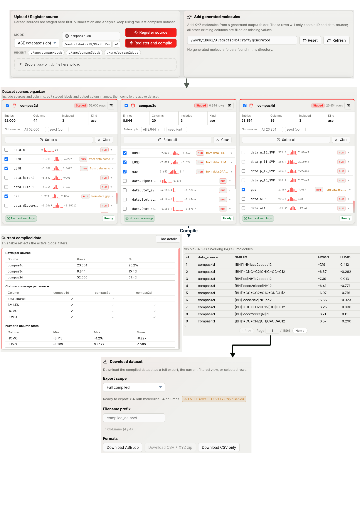

Data Manager
The Management tab assembles molecular datasets from multiple sources, merges them, and exports the result. It operates in two stages: staging (register and configure each source) and compilation (merge into one dataset).

Molecular sources can be staged, renamed, included or excluded, reconciled at the column level, compiled into an active dataset, and exported for downstream modelling or analysis.
Header
If a compiled dataset is active, the header card shows the current molecule count and column count. Otherwise it prompts you to load data.
Loading a source
The top registration panel loads existing datasets. Each registered source becomes a source flashcard that can be inspected and edited before compilation.
File picker / folder picker
Switch the mode dropdown between CSV + XYZ folder and ASE database (.db), then use the file/folder buttons:
- CSV + XYZ folder: choose a CSV file and a folder of
.xyzfiles separately. - ASE database: choose a single
.dbfile.
Path input
Type or paste an absolute file or folder path into the text box, then press Enter or click the arrow button. Works the same as the file picker.
Drag and drop
Drag a .csv or .db file directly onto the drop zone. The app auto-detects the type, then you can register it with the same action buttons.
Recent paths
Up to 3 recently used paths are shown as clickable chips below the inputs. Click a chip to populate the corresponding path field.
Register vs. Register and compile
- Register source — adds the source to the staged list; you configure columns before merging.
- Register and compile — registers and immediately compiles using current settings. Useful when adding one more source to an existing dataset.
A progress overlay (with a live progress bar) appears while the CSV is being parsed or the ASE file is being uploaded.
Adding generated molecules
Use Add generated molecules to stage molecules from an output folder created by the 3D generation or structure-directed generation tabs.
- Leave the root path blank to use
MOLCRAFT_OUTPUTS_DIR, or paste another generated-output root path. - Click Refresh to rescan the folder.
- Choose Model, Date, and Token / run.
- Optionally expand Generation config to verify molecule count, batch size, frames, diffusion steps, seed, and max size.
- Set ID prefix and Data source label.
- Click Register generated molecules.
Generated rows contain molecule IDs and data_source; scalar descriptor columns are only added after you run analysis tools or merge with another source.
Configuring a staged source
Each source appears as a flashcard. You can have multiple sources open simultaneously.
Source-level controls
| Control | What it does |
|---|---|
| Checkbox (top-left) | Include or exclude the entire source from compilation |
| Label (editable) | Name used to identify the source; auto-incremented if a duplicate label is detected |
| Status badge | Shows Compiled / Generated / Staged |
| Row count | Number of molecules in this source |
| Delete (trash icon) | Remove the source from the staged list |
The readiness chip at the bottom of the flashcard indicates whether the source is ready to compile: Ready, Excluded, No columns selected, or Needs attention (with specific warnings listed).
Column configuration
The column list shows every column in the source.
| Control | What it does |
|---|---|
| Checkbox (per column) | Include or exclude the column from the compiled dataset |
| Name field (editable) | Output column name; if changed, a from [original] label appears beneath it |
| Type badge | num (numeric), cat (categorical), vec (vector/descriptor) |
| Mini stats | Numeric: mini histogram of the distribution. Categorical: unique value count. Vector: dimension |
| Expand (▸) | Show a larger stats view for that column |
Column toolbar: Select all / Clear buttons to quickly include or exclude all columns in one click.
Computed columns before compile
Click Computed on a staged source to create a numeric column from two operands. Each operand can be a numeric column or a constant, and the supported operators are +, -, *, and /. The computed column is added to the staged source and participates in compilation like any other selected column.
Compilation
Click Compile dataset when all sources are configured. A progress modal appears; compilation runs synchronously.
Choose two conflict policies before compiling:
Duplicate-ID policy
Applies when the same molecule ID appears in more than one source.
| Option | Behaviour |
|---|---|
| Rename duplicates | Keep both rows; suffix the duplicate ID with _2, _3, … |
| Skip duplicates | Keep the first occurrence; discard later ones |
| Block compile | Abort if any duplicate ID exists |
Column-conflict policy
Applies when two sources contribute columns with the same name.
| Option | Behaviour |
|---|---|
| Auto-merge by name | Use the non-null value; first source wins if both have values |
| Auto-suffix names | Keep both columns, suffixed with the source label |
| Block compile | Abort if any column name collision exists |
Errors (up to 8) and warnings (up to 20) from the last compile attempt are shown above the flashcard grid.
Compiled dataset view
After a successful compile, the lower half of the tab shows a two-column layout:
- Left — the compiled dataset as a scrollable, sortable data table.
- Right — the filter panel (same filters as in Visualization).
The header card updates to show the new molecule and column counts.
Useful controls in the compiled view:
| Control | What it does |
|---|---|
| Computed | Adds a numeric computed column to the active compiled dataset |
| Show details | Opens rows-per-source, column-coverage, and numeric-statistics summaries |
| Filters | Applies the same global filters used by Visualization and export |
Filtering in this panel is shared with the Visualization tab. Permanent filter actions remove rows from the active dataset; temporary filters only change the current filtered view.
Export
The Download dataset panel exports the compiled data. Select an export scope before clicking a download button:
| Scope | Meaning |
|---|---|
| Full compiled | Every row in the compiled dataset |
| Filtered view | Only rows passing the current global filters |
| Selected rows | Only rows selected in the table or Visualization workspace |
| Format | Contents |
|---|---|
| Download ASE .db | ASE database with geometries embedded and scalar columns written as key_value_pairs |
| Download CSV + XYZ zip | CSV plus a folder of .xyz files, zipped; disabled above 5,000 rows |
| Download CSV only | Scalar and categorical columns only; useful for large datasets |
Use the filename field to set the export prefix. The exporter resolves XYZ geometries from the registered source information, so generated-output sources and path-loaded sources can be exported after compilation.